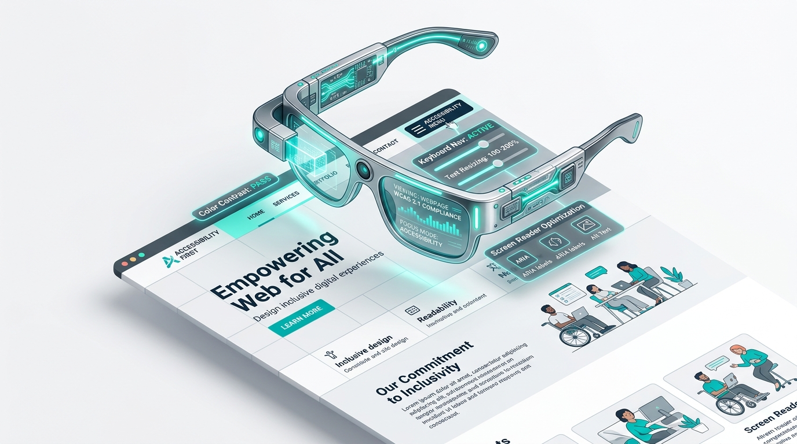

👁️ See it their way
Vision Simulator
1 in 12 men and 1 in 200 women have some form of color blindness. See your scanned page the way they — and people with low vision — actually experience it.
Vision simulation tool
8%of men have red-green color blindness
2.2Bpeople live with some vision impairment (WHO)
1 in 12can't distinguish red/green CTAs reliably
Normal Vision
This is a CSS-based approximation for awareness purposes — it's a helpful guide, not a clinically exact simulation.
No scan preview available
Run a scan first — the Vision Simulator reuses the same live preview as "Go to Element".
Scan a website